MacBook Pro 14" M3 PRO SK 2023 Vesmírne čierny
2025-07-20 | 1 890 €
Otvoriť inzerát
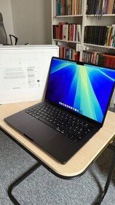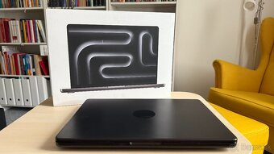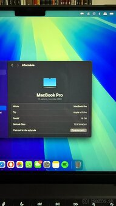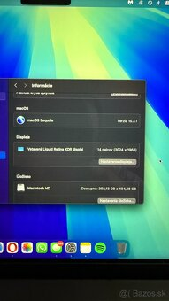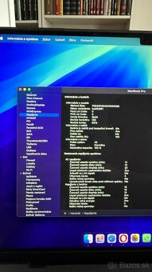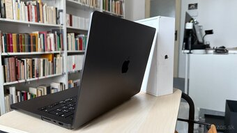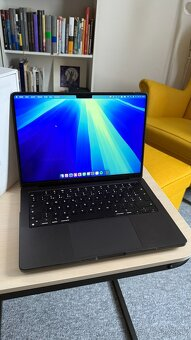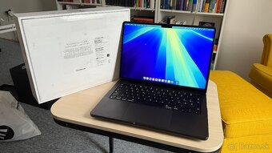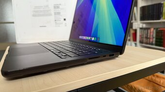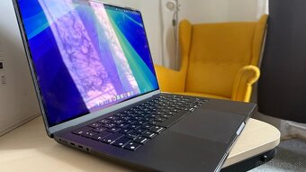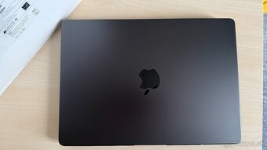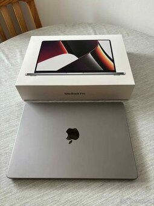 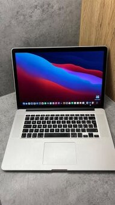
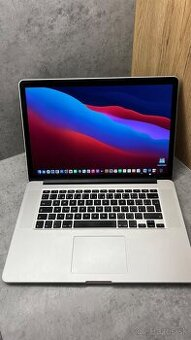 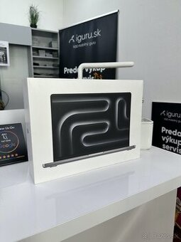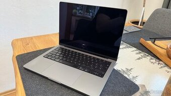
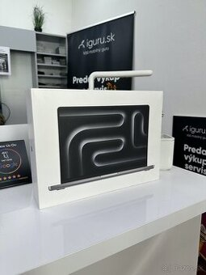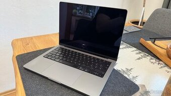

 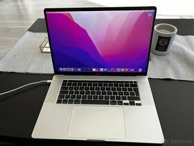
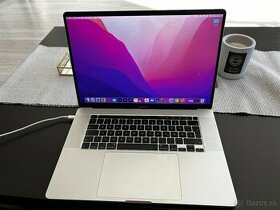
Preferujem osobný odber v KE.
Kupované v alze, ešte rok v záruke.
Bezchybný technický a optický stav, po celý čas v ochrannom kryte (v cene).
Počet cyklov batérie 43. 100% kapacita batérie.
Lokalizovaný pre SK.
Predávam kvôli prechodu na MacMini M4.
MacBook – Apple M3 Pro (11jádrový), 14,2" IPS lesklý 3024 × 1964 px, 120 Hz, RAM 18GB, Apple M3 PRO 14-jadrová GPU, SSD 512GB, podsvietená klávesnica, webkamera, USB-C, WiFi 6, hmotnosť 1,61 kg